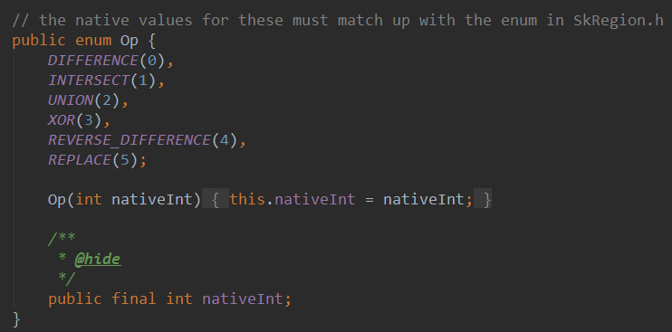
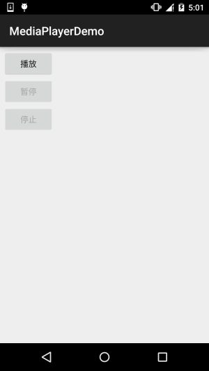
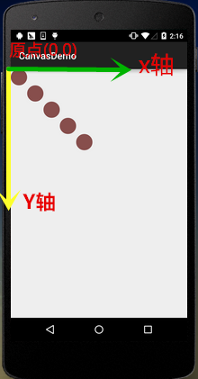
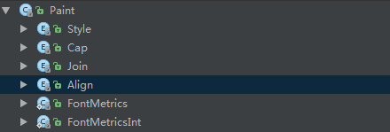
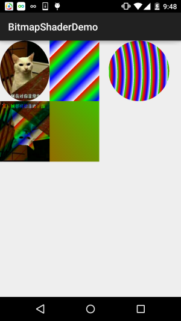
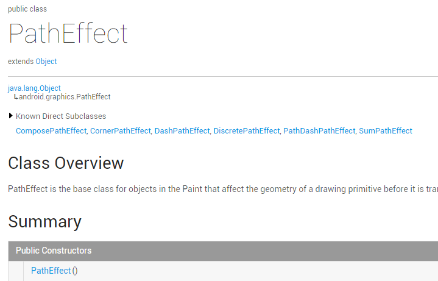
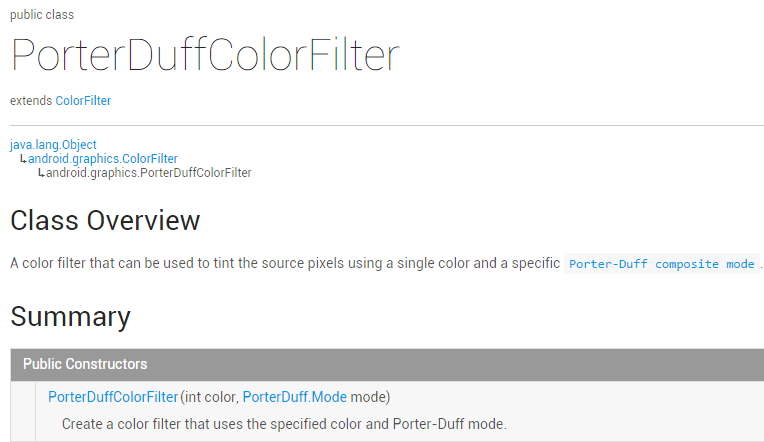
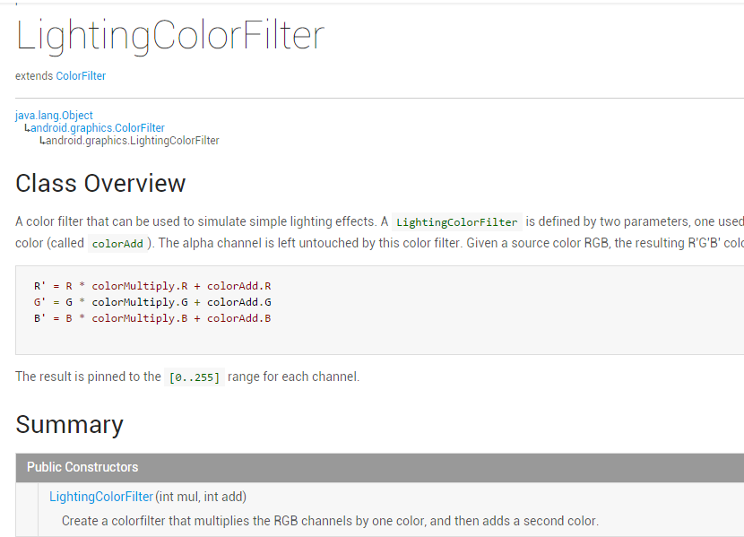

8.3.17 Canvas API详解(Part 2)剪切方法合集
本节引言： 本节继续带来Android绘图系列详解之Canvas API详解(Part 2)，今天要讲解的是Canvas 中的ClipXxx方法族！我们可以看到文档中给...

9.2 MediaPlayer播放音频与视频
本节引言： 本节带来的是Android多媒体中的——MediaPlayer，我们可以通过这个API来播放音频和视频 该类是Androd多媒体框架中的一个重要组件...

8.3.16 Canvas API详解(Part 1)
本节引言： 前面我们花了13小节详细地讲解了Android中Paint类大部分常用的API，本节开始我们来讲解 Canvas(画板)的一些常用API，我们在8.3...
8.3.15 Paint API之——Typeface(字型)
本节带来Paint API系列的最后一个API，Typeface(字型)，由字义，我们大概可以猜到，这个 API是用来设置字体以及字体风格的，使用起来也非常的...

8.3.14 Paint几个枚举/常量值以及ShadowLayer阴影效果
本节引言： 在Android基础入门教程——8.3.1 三个绘图工具类详解Paint的方法参数那里我们就接触到 了这样几个东西：Paint.Style，Paint.Cap...

8.3.13 Paint API之—— Shader(图像渲染)
1.构造方法详解 1)BitmapShader(图像渲染) BitmapShader(Bitmap bitmap, Shader.TileMode tileX, Shader.TileMode tileY) 使用一...

8.3.12 Paint API之—— PathEffect(路径效果)
本节引言： 本节继续来学习Paint的API——PathEffect(路径效果)，我们把画笔的sytle设置为Stroke，可以 绘制一个个由线构成的图形，而这些线...

10.6 PowerManager(电源服务)
本节引言： 本节要讲解的是Android为我们提供的系统服务中的——PowerManager(电源服务)，用于 管理CPU运行，键盘或屏幕亮起来；不过，除非...

8.3.11 Paint API之—— ColorFilter(颜色过滤器)(3-3)
本节引言： 嗯，本来说好今天不写的，还是写吧，毕竟难得空闲哈~，本节给大家带来的是 ColorFilter的第三个子类：PorterDuffColorFilter，...

8.3.10 Paint API之—— ColorFilter(颜色过滤器)(2-3)
本节引言： 上一节中我们讲解了Android中Paint API中的ColorFilter(颜色过滤器)的第一个子类： ColorMatrixColorFilter(颜色矩阵颜色过滤...